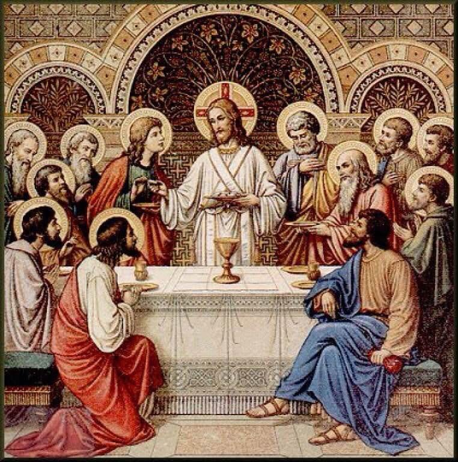
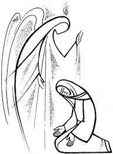

Heftet gjengir messens faste ledd i forenklet form. Lesningene og bønnene skifter med kirkeåret, og presten kan velge andre former enn dem som står her. På hverdager faller Gloria og trosbekjennelsen vanligvis bort, og når et sakrament feires i messen, kommer egne ledd i tillegg. Messens ordning står også i salmeboken «Lov Herren».
Dagens messe med lesninger
Today’s Mass with readings
kongsberg.katolsk.no/messen/i-dag
Inngangssalme (eller Angelus i hverdagsmesser)
Prest: I Faderens og Sønnens og Den Hellige Ånds navn.
Alle: Amen.
Prest: Herren være med dere.
Alle: Og med din ånd.
Prest: La oss bekjenne våre synder, så vi verdig kan feire denne hellige handling. Jeg bekjenner...
Alle: ... for Gud, Den Allmektige, og for dere alle, at jeg har syndet meget i tanker og ord, gjerninger og forsømmelser ved min skyld.
Derfor ber jeg den salige jomfru Maria, alle engler og hellige
og dere alle: be for meg til Herren, vår Gud.
Prest: Den allmektige Gud miskunne seg over oss, tilgi våre synder og føre oss til det evige liv.
Alle: Amen.
Prest: Kyrie eleison
Alle: Kyrie eleison, Kyrie eleison
Prest: Christe eleison
Alle: Christe eleison, Christe eleison
Prest: Kyrie eleison
Alle: Kyrie eleison, Kyrie eleison
Prest: Ære være Gud i det høyeste.
Alle: Og fred på jorden for mennesker av god vilje.
Vi priser deg. Vi velsigner deg. Vi tilber deg. Vi forherliger deg.
Vi takker deg for din store herlighet.
Herre vår Gud, himlenes konge, Gud allmektige Fader.
Herre, du enbårne Sønn, Jesus Kristus.
Herre, vår Gud. Guds lam, Faderens Sønn.
Du som tar bort verdens synder, miskunn deg over oss.
Du som tar bort verdens synder, hør vår bønn.
Du som sitter ved Faderens høyre hånd, miskunn deg over oss.
For du alene er hellig, du alene er Herren.
Du alene er den høyeste, Jesus Kristus, med den Hellige Ånd i Gud Faderens herlighet. Amen.
Prest: La oss be: ... i evighet.
Alle: Amen.
Slik lyder Herrens ord.
Alle: Gud være lovet.
Alle: (omkved)
Halleluja.
Prest: Herren være med dere.
Alle: Og med din ånd.
Prest: Dette hellige evangelium står skrevet hos evangelisten...
Alle: Ære være deg, Herre.
(...) Slik lyder Herrens ord.
Alle: Lovet være du, Kristus.
Jeg tror på én Gud, den allmektige Fader,
som har skapt himmel og jord, alle synlige og usynlige ting.
Jeg tror på én Herre, Jesus Kristus, Guds enbårne Sønn,
født av Faderen fra evighet.
Gud av Gud, lys av lys, sann Gud av den sanne Gud,
født, ikke skapt, av samme vesen som Faderen.
Ved ham er alt blitt skapt. For oss mennesker og for vår frelses skyld steg han ned fra himmelen.
Mens alle bøyer seg:
Han er blitt kjød ved den Hellige Ånd av Jomfru Maria, og er blitt menneske.
Han ble korsfestet for oss, pint under Pontius Pilatus og gravlagt.
Han oppstod den tredje dag, etter Skriften,
fór opp til himmelen, og sitter ved Faderens høyre hånd.
Han skal komme igjen med herlighet og dømme levende og døde,
og på hans rike skal det ikke være ende.
Jeg tror på den Hellige Ånd, Herre og livgiver,
som utgår fra Faderen og Sønnen,
som med Faderen og Sønnen tilbes og forherliges,
og som har talt ved profetene.
Jeg tror på én, hellig, katolsk og apostolisk Kirke.
Jeg bekjenner én dåp til syndenes forlatelse.
Jeg venter de dødes oppstandelse og det evige liv. Amen.
Alle: Herre, hør vår bønn.
Offertoriesang
Uten sang
Prest: Velsignet er du, Herre, all skapnings Gud. Av din rikdom har vi mottatt det brød som vi bærer frem for deg, en frukt av jorden og av menneskers arbeid, som for oss blir livets brød.
Alle: Velsignet være Gud i evighet.
Prest: Velsignet er du, Herre, all skapnings Gud. Av din rikdom har vi mottatt den vin som vi bærer frem for deg, en frukt av vintreet og av menneskers arbeid, som for oss blir frelsens kalk.
Alle: Velsignet være Gud i evighet.
Prest: La oss be til Gud, den allmektige, at han vil motta sin Kirkes offer av våre hender.
Alle: Til lov og ære for sitt navn og til hele verdens frelse.
Prest: Herre (...) Ved Kristus, vår Herre.
Alle: Amen.
Prest: Herren være med dere.
Alle: Og med din ånd.
Prest: Løft deres hjerter.
Alle: Vi løfter våre hjerter til Herren.
Prest: La oss takke Herren, vår Gud.
Alle: Det er verdig og rett.
Prest: I sannhet (...) idet vi jublende istemmer:
Alle: Hellig, hellig, hellig er Herren, Hærskarenes Gud.
Himlene og jorden er fulle av din herlighet. Hosanna i det høye!
Velsignet være han som kommer i Herrens navn. Hosanna i det høye!
I sannhet, hellig er du Herre, all hellighets kilde.
Derfor står vi for ditt åsyn, og sammen med hele din Kirke feirer vi ukens første dag, den dag da Kristus stod opp fra de døde.
Ved ham som du har opphøyet til din høyre hånd, ber vi deg:
Helliggjør disse gaver ved din Ånds livgivende kraft, så de må bli for oss vår Herres Jesu Kristi legeme og blod.
Da han frivillig overga seg til sin lidelse, tok han brødet, takket, brøt brødet, gav det til sine disipler og sa:
TA OG ET ALLE DERAV:
FOR DETTE ER MITT LEGEME,
SOM SKAL GIS FOR DERE.
Likeså tok han etter måltidet kalken, takket atter, gav den til sine disipler og sa:
TA OG DRIKK ALLE DERAV:
FOR DETTE ER MITT BLODS KALK,
DEN NYE OG EVIGE PAKTS BLOD,
SOM SKAL UTGYDES FOR DERE
OG FOR DE MANGE
TIL SYNDENES FORLATELSE.
GJØR DETTE TIL MINNE OM MEG.
Prest: Troens mysterium.
Alle: Din død forkynner vi, Herre, og din oppstandelse lovpriser vi, inntil du kommer.
Derfor minnes vi hans død og oppstandelse, og vi bringer deg, Herre, livets brød og frelsens kalk og takker for at du holdt oss verdige til å stå for ditt åsyn og tjene deg.
I ydmykhet bønnfaller vi deg, at vi som får del i Kristi legeme og blod, må samles til ett av den Hellige Ånd.
Kom i hu, Herre, din kirke over hele jorden, så du kan gjøre den fullkommen i kjærlighet, i enhet med vår pave Leo og vår biskop Fredrik og med hele ditt presteskap.
Kom også i hu våre brødre og søstre som sov inn i håpet om oppstandelsen, og alle som har forlatt denne verden. Ta dem inn i lyset fra ditt åsyn.
Forbarm deg over oss alle, så vi får del i det evige liv sammen med Guds mor, den salige jomfru Maria, den salige Josef, hennes ekteviede, de salige apostler og alle hellige som gjennom alle tider levet i ditt vennskap.
Gi du oss å prise og forherlige deg ved din Sønn, Jesus Kristus.
Ved ham og med ham og i ham tilkommer deg, Gud, allmektige Fader, i Den Hellige Ånds enhet all ære og herlighet fra evighet til evighet.
Alle: Amen.
Eller
I sannhet hellig er du, Herre, og med rette lovprises du av all skapningen. For du levendegjør og helliggjør alle ting ved din Sønn, vår Herre Jesus Kristus, gjennom Den Hellige Ånds kraft.
Uopphørlig samler du ditt folk, så dette rene offer kan frembæres for ditt navn over hele jordens krets.
Derfor står vi for ditt åsyn, og sammen med hele din Kirke feirer vi ukens første dag, den dag da Kristus stod opp fra de døde. Ved ham som du har opphøyet til din høyre hånd, bønnfaller vi deg, Herre:
Helliggjør ved din ånd disse gaver som vi bærer frem for deg, så de må bli din Sønns, vår Herres Jesu Kristi legeme ☩ og blod, han som bød oss å feire disse mysterier.
For i den natt da han ble forrådt, tok han brødet, takket deg og velsignet, brøt brødet, gav det til sine disipler og sa:
TA OG ET ALLE DERAV:
FOR DETTE ER MITT LEGEME,
SOM SKAL GIS FOR DERE.
Likeså tok han etter måltidet kalken, takket atter, gav den til sine disipler og sa:
TA OG DRIKK ALLE DERAV:
FOR DETTE ER MITT BLODS KALK,
DEN NYE OG EVIGE PAKTS BLOD,
SOM SKAL UTGYDES FOR DERE
OG FOR DE MANGE
TIL SYNDENES FORLATELSE.
GJØR DETTE TIL MINNE OM MEG.
Prest: Troens mysterium.
Alle: Din død forkynner vi, Herre, og din oppstandelse lovpriser vi, inntil du kommer.
Derfor minnes vi, Herre, din Sønns frelsende lidelse, hans underfulle oppstandelse og himmelferd, og mens vi venter på hans gjenkomst, bærer vi med takksigelse frem for deg dette levende og hellige offer.
Se i nåde til din Kirkes offergave. Den er for deg det samme offerlam, som etter din vilje ble til vår soning. Gi at vi, styrket med din Sønns legeme og blod, og fylt av hans Hellige Ånd, må bli ett legeme og én ånd i Kristus.
Måtte han gjøre oss til en evig gave for deg, så vi kan dele arvelodd med dine utvalgte, fremfor alt med den salige Jomfru, Guds Mor Maria, den salige Josef, hennes ekteviede, dine salige apostler og ærerike martyrer, med den hellige Barbara og alle hellige, som uten opphør kommer oss til hjelp med sin forbønn hos deg.
Vi ber deg, Herre: La dette offer, som forsoner oss med deg, gi hele verden fred og frelse. Styrk din kirke i tro og kjærlighet under dens ferd på jorden. Våk over din tjener, vår pave Leo og vår biskop Fredrik, over alle biskoper og prester i hele verden og over det folk du har gjort til ditt. Lytt i nåde til alle bønner fra dem du har villet samle om ditt alter. Barmhjertige Fader, forén med deg alle dine barn som er spredt over hele jorden.
Vi ber også for våre avdøde, og for alle dem som har forlatt denne verden i ditt vennskap, at du i kjærlighet må ta dem inn i ditt rike, hvor også vi håper å komme, så vi sammen kan mettes av din herlighet til evig tid, ved Kristus, vår Herre, han som er alle gavers giver.
Ved ham og med ham og i ham tilkommer deg, Gud, allmektige Fader, i Den Hellige Ånds enhet all ære og herlighet fra evighet til evighet.
Alle: Amen.
Prest: På Herrens bud og veiledet av hans hellige ord våger vi å si:
Alle: Fader vår, du som er i himmelen!
Helliget vorde ditt navn. Komme ditt rike.
Skje din vilje, som i himmelen så og på jorden.
Gi oss i dag vårt daglige brød.
Og forlat oss vår skyld, som vi og forlater våre skyldnere.
Og led oss ikke inn i fristelse, men fri oss fra det onde.
Prest: Fri oss, Herre, fra alt ondt, og gi oss nådig fred i våre dager,
så vi med din barmhjertighets hjelp alltid må være fri fra synd
og trygget mot all trengsel, mens vi lever i det salige håp
og venter vår Frelser Jesu Kristi komme.
Alle: For riket er ditt, og makten og æren i evighet.
Prest: Herre Jesus Kristus, du som sa til dine apostler:
"Fred etterlater jeg dere, min fred gir jeg dere,"
se ikke på våre synder, men på din Kirkes tro,
og gi den etter din vilje fred og enhet,
du som lever og råder fra evighet til evighet.
Alle: Amen.
Prest: Herrens fred være alltid med dere.
Alle: Og med din ånd.
Prest: Hils hverandre med fredens tegn.
Alle: Guds lam, som tar bort verdens synder, miskunn deg over oss.
Guds lam, som tar bort verdens synder, miskunn deg over oss.
Guds lam, som tar bort verdens synder, gi oss din fred.
Prest: Se Guds lam, se ham som tar bort verdens synder.
Salige er de som er kalt til Lammets bord.
Alle: Herre, jeg er ikke verdig at du går inn under mitt tak,
men si bare ett ord, så blir min sjel helbredet.
Prest: Kristi legeme.
Kommunikanten: Amen.
Sang ved kommunionen
Prest: La oss be: ... evighet til evighet.
Alle: Amen.
Prest: Herren være med dere.
Alle: Og med din ånd.
Prest: Den allmektige Gud, Faderen og Sønnen
+ og Den Hellige Ånd, velsigne dere alle.
Alle: Amen.
Prest: Messen er til ende. Gå med fred.
Alle: Gud være lovet.
Angelus og utgangssalme
Prest: Herrens engel brakte Maria det glade budskap.
Alle: Og hun unnfanget ved Den hellige Ånd.
Prest: Hill deg, Maria,
full av nåde, Herren er med deg,
velsignet er du iblant kvinner,
og velsignet er ditt livs frukt, Jesus.
Alle: Hellige Maria, Guds mor,
be for oss syndere, nå og i vår dødstime. Amen.
Prest: Se, jeg er Herrens tjenerinne.
Alle: Det skje meg etter ditt ord.
Hill deg, Maria...
Prest: Og Ordet ble kjød.
Alle: Og tok bolig iblant oss.
Hill deg, Maria...
Prest: Be for oss, Guds hellige mor.
Alle: At vi må bli verdige til Kristi løfter.
Prest: La oss be: Vi ber deg, Herre, fyll våre hjerter med din nåde, så vi som ved engelens budskap har erkjent at Kristus, din Sønn, er blitt menneske, ved hans lidelse og kors må bli ført til oppstandelsens herlighet. Ved ham, Kristus, vår Herre.
Alle: Amen.

This booklet gives the fixed parts of the Mass in simplified form. The readings and prayers change with the liturgical year, and the priest may choose other forms than those printed here. On weekdays the Gloria and the Creed are usually omitted, and when a sacrament is celebrated during Mass, its own rites are added. The Order of Mass can also be found in the hymn book “Lov Herren”.
Priest: The Angel of the Lord declared unto Mary,
All: And she conceived of the Holy Spirit.
Priest: Hail Mary, full of grace, the Lord is with you;
blessed are you among women,
and blessed is the fruit of your womb, Jesus.
All: Holy Mary, Mother of God,
pray for us sinners
now and at the hour of our death. Amen.
Priest: Behold the handmaid of the Lord,
All: Be it done unto me according to your Word.
Hail Mary...
Priest: And the Word was made flesh,
All: And dwelt among us.
Hail Mary...
Priest: Pray for us, O holy Mother of God,
All: That we may be made worthy of the promises of Christ.
Priest: Let us pray. Pour forth, we beseech you, O Lord, your grace into our hearts: that we, to whom the Incarnation of Christ your Son was made known by the message of an Angel, may by his Passion and Cross be brought to the glory of his Resurrection. Through the same Christ our Lord.
All: Amen.
Entrance Chant (or the Angelus at weekday Masses)
Priest: In the name of the Father, and of the Son, and of the Holy Spirit.
All: Amen.
Priest: The Lord be with you.
All: And with your spirit.
Priest: Brethren, let us acknowledge our sins, and so prepare ourselves to celebrate the sacred mysteries.
All: I confess to almighty God and to you, my brothers and sisters, that I have greatly sinned, in my thoughts and in my words, in what I have done and in what I have failed to do, through my fault, through my fault, through my most grievous fault;
therefore I ask blessed Mary ever-Virgin, all the Angels and Saints,
and you, my brothers and sisters, to pray for me to the Lord our God.
Priest: May almighty God have mercy on us, forgive us our sins, and bring us to everlasting life.
All: Amen.
Priest: Lord, have mercy.
All: Lord, have mercy.
Priest: Christ, have mercy.
All: Christ, have mercy.
Priest: Lord, have mercy.
All: Lord, have mercy.
Priest: Glory to God in the highest,
All: and on earth peace to people of good will.
We praise you, we bless you, we adore you, we glorify you,
we give you thanks for your great glory,
Lord God, heavenly King, O God, almighty Father.
Lord Jesus Christ, Only Begotten Son,
Lord God, Lamb of God, Son of the Father,
you take away the sins of the world, have mercy on us;
you take away the sins of the world, receive our prayer;
you are seated at the right hand of the Father, have mercy on us.
For you alone are the Holy One, you alone are the Lord,
you alone are the Most High, Jesus Christ,
with the Holy Spirit, in the glory of God the Father. Amen.
Priest: Let us pray. (...) for ever and ever.
All: Amen.
The word of the Lord.
All: Thanks be to God.
All: (response)
Alleluia.
Priest: The Lord be with you.
All: And with your spirit.
Priest: A reading from the holy Gospel according to...
All: Glory to you, O Lord.
(...) The Gospel of the Lord.
All: Praise to you, Lord Jesus Christ.
I believe in one God, the Father almighty,
maker of heaven and earth, of all things visible and invisible.
I believe in one Lord Jesus Christ, the Only Begotten Son of God,
born of the Father before all ages.
God from God, Light from Light, true God from true God,
begotten, not made, consubstantial with the Father;
through him all things were made. For us men and for our salvation he came down from heaven,
All bow:
and by the Holy Spirit was incarnate of the Virgin Mary, and became man.
For our sake he was crucified under Pontius Pilate, he suffered death and was buried,
and rose again on the third day in accordance with the Scriptures.
He ascended into heaven and is seated at the right hand of the Father.
He will come again in glory to judge the living and the dead
and his kingdom will have no end.
I believe in the Holy Spirit, the Lord, the giver of life,
who proceeds from the Father and the Son,
who with the Father and the Son is adored and glorified,
who has spoken through the prophets.
I believe in one, holy, catholic and apostolic Church.
I confess one Baptism for the forgiveness of sins
and I look forward to the resurrection of the dead and the life of the world to come. Amen.
All: Lord, hear our prayer.
Offertory Chant
Without singing
Priest: Blessed are you, Lord God of all creation, for through your goodness we have received the bread we offer you: fruit of the earth and work of human hands, it will become for us the bread of life.
All: Blessed be God for ever.
Priest: Blessed are you, Lord God of all creation, for through your goodness we have received the wine we offer you: fruit of the vine and work of human hands, it will become our spiritual drink.
All: Blessed be God for ever.
Priest: Pray, brethren, that my sacrifice and yours may be acceptable to God, the almighty Father.
All: May the Lord accept the sacrifice at your hands for the praise and glory of his name, for our good and the good of all his holy Church.
Priest: (...) Through Christ our Lord.
All: Amen.
Priest: The Lord be with you.
All: And with your spirit.
Priest: Lift up your hearts.
All: We lift them up to the Lord.
Priest: Let us give thanks to the Lord our God.
All: It is right and just.
Priest: It is truly right and just (...) as with one voice we acclaim:
All: Holy, Holy, Holy Lord God of hosts.
Heaven and earth are full of your glory. Hosanna in the highest.
Blessed is he who comes in the name of the Lord. Hosanna in the highest.
You are indeed Holy, O Lord, the fount of all holiness. Make holy, therefore, these gifts, we pray, by sending down your Spirit upon them like the dewfall, so that they may become for us the Body and Blood of our Lord Jesus Christ.
At the time he was betrayed and entered willingly into his Passion, he took bread and, giving thanks, broke it, and gave it to his disciples, saying:
TAKE THIS, ALL OF YOU, AND EAT OF IT,
FOR THIS IS MY BODY,
WHICH WILL BE GIVEN UP FOR YOU.
In a similar way, when supper was ended, he took the chalice and, once more giving thanks, he gave it to his disciples, saying:
TAKE THIS, ALL OF YOU, AND DRINK FROM IT,
FOR THIS IS THE CHALICE OF MY BLOOD,
THE BLOOD OF THE NEW AND ETERNAL COVENANT,
WHICH WILL BE POURED OUT FOR YOU AND FOR MANY
FOR THE FORGIVENESS OF SINS.
DO THIS IN MEMORY OF ME.
Priest: The mystery of faith.
All: We proclaim your Death, O Lord, and profess your Resurrection until you come again.
Therefore, as we celebrate the memorial of his Death and Resurrection, we offer you, Lord, the Bread of life and the Chalice of salvation, giving thanks that you have held us worthy to be in your presence and minister to you. Humbly we pray that, partaking of the Body and Blood of Christ, we may be gathered into one by the Holy Spirit.
Remember, Lord, your Church, spread throughout the world, and bring her to the fullness of charity, together with Leo our Pope and Fredrik our Bishop and all the clergy. Remember also our brothers and sisters who have fallen asleep in the hope of the resurrection, and all who have died in your mercy: welcome them into the light of your face. Have mercy on us all, we pray, that with the blessed Virgin Mary, Mother of God, with blessed Joseph, her Spouse, with the blessed Apostles, and all the Saints who have pleased you throughout the ages, we may merit to be co-heirs to eternal life, and may praise and glorify you through your Son, Jesus Christ.
Through him, and with him, and in him, O God, almighty Father, in the unity of the Holy Spirit, all glory and honor is yours, for ever and ever.
All: Amen.
Or
You are indeed Holy, O Lord, and all you have created rightly gives you praise, for through your Son our Lord Jesus Christ, by the power and working of the Holy Spirit, you give life to all things and make them holy, and you never cease to gather a people to yourself, so that from the rising of the sun to its setting a pure sacrifice may be offered to your name.
Therefore, O Lord, we humbly implore you: by the same Spirit graciously make holy these gifts we have brought to you for consecration, that they may become the Body and ☩ Blood of your Son our Lord Jesus Christ, at whose command we celebrate these mysteries.
For on the night he was betrayed he himself took bread, and, giving you thanks, he said the blessing, broke the bread and gave it to his disciples, saying:
TAKE THIS, ALL OF YOU, AND EAT OF IT,
FOR THIS IS MY BODY,
WHICH WILL BE GIVEN UP FOR YOU.
In a similar way, when supper was ended, he took the chalice, and, giving you thanks, he said the blessing, and gave the chalice to his disciples, saying:
TAKE THIS, ALL OF YOU, AND DRINK FROM IT,
FOR THIS IS THE CHALICE OF MY BLOOD,
THE BLOOD OF THE NEW AND ETERNAL COVENANT,
WHICH WILL BE POURED OUT FOR YOU AND FOR MANY
FOR THE FORGIVENESS OF SINS.
DO THIS IN MEMORY OF ME.
Priest: The mystery of faith.
All: We proclaim your Death, O Lord, and profess your Resurrection until you come again.
Therefore, O Lord, as we celebrate the memorial of the saving Passion of your Son, his wondrous Resurrection and Ascension into heaven, and as we look forward to his second coming, we offer you in thanksgiving this holy and living sacrifice.
Look, we pray, upon the oblation of your Church and, recognizing the sacrificial Victim by whose death you willed to reconcile us to yourself, grant that we, who are nourished by the Body and Blood of your Son and filled with his Holy Spirit, may become one body, one spirit in Christ.
May he make of us an eternal offering to you, so that we may obtain an inheritance with your elect, especially with the most blessed Virgin Mary, Mother of God, with blessed Joseph, her Spouse, with your blessed Apostles and glorious Martyrs, with Saint Barbara and with all the Saints, on whose constant intercession in your presence we rely for unfailing help.
May this Sacrifice of our reconciliation, we pray, O Lord, advance the peace and salvation of all the world. Be pleased to confirm in faith and charity your pilgrim Church on earth, with your servant Leo our Pope and Fredrik our Bishop, the Order of Bishops, all the clergy, and the entire people you have gained for your own.
Listen graciously to the prayers of this family, whom you have summoned before you: in your compassion, O merciful Father, gather to yourself all your children scattered throughout the world.
To our departed brothers and sisters and to all who were pleasing to you at their passing from this life, give kind admittance to your kingdom. There we hope to enjoy for ever the fullness of your glory, when you will wipe away every tear from our eyes. For seeing you, our God, as you are, we shall be like you for all the ages and praise you without end, through Christ our Lord, through whom you bestow on the world all that is good.
Through him, and with him, and in him, O God, almighty Father, in the unity of the Holy Spirit, all glory and honor is yours, for ever and ever.
All: Amen.
Priest: At the Savior's command and formed by divine teaching, we dare to say:
All: Our Father, who art in heaven,
hallowed be thy name;
thy kingdom come,
thy will be done
on earth as it is in heaven.
Give us this day our daily bread,
and forgive us our trespasses,
as we forgive those who trespass against us;
and lead us not into temptation,
but deliver us from evil.
Priest: Deliver us, Lord, we pray, from every evil,
graciously grant peace in our days,
that, by the help of your mercy,
we may be always free from sin
and safe from all distress,
as we await the blessed hope
and the coming of our Savior, Jesus Christ.
All: For the kingdom, the power and the glory are yours now and for ever.
Priest: Lord Jesus Christ, who said to your Apostles,
Peace I leave you, my peace I give you,
look not on our sins,
but on the faith of your Church,
and graciously grant her peace and unity
in accordance with your will.
Who live and reign for ever and ever.
All: Amen.
Priest: The peace of the Lord be with you always.
All: And with your spirit.
Priest: Let us offer each other the sign of peace.
All: Lamb of God, you take away the sins of the world, have mercy on us.
Lamb of God, you take away the sins of the world, have mercy on us.
Lamb of God, you take away the sins of the world, grant us peace.
Priest: Behold the Lamb of God,
behold him who takes away the sins of the world.
Blessed are those called to the supper of the Lamb.
All: Lord, I am not worthy
that you should enter under my roof,
but only say the word
and my soul shall be healed.
Priest: The Body of Christ.
Communicant: Amen.
Communion Chant
Priest: Let us pray. (...) Through Christ our Lord.
All: Amen.
Priest: The Lord be with you.
All: And with your spirit.
Priest: May almighty God bless you, the Father, and the Son,
+ and the Holy Spirit.
All: Amen.
Priest: Go forth, the Mass is ended.
All: Thanks be to God.
Angelus and Recessional Hymn
O hellige Barbara,
du inspirerer Kirken med ditt korte jordiske liv.
Kristus velger deg til sin brud
og du ofrer ditt liv til ham ved martyrdøden.
Ditt mot i prøvelser er vårt forbilde,
din styrke viser seg gjennom overgivelse og gavmildhet.
Ved din forbønn ber vi
for alle som blir forfulgt for sin tro,
som faller i motgang, og ikke klarer å reise seg.
Gi dem din tros gave, håpets glede og kjærlighetens omsorg,
og vær deres følgesvenn på veien til Faderen.
O hellige Barbara, skytshelgen for vår menighet.
Vi forener våre bønner med dine
i takksigelse til vår Herre Jesus Kristus.
Lær oss under alle omstendigheter
alltid å ha Treenigheten, Fader, Sønn og Hellig Ånd i vårt hjerte
slik som du, da du ble fengslet i ditt eget hjem,
hadde tårnets tre vinduer som tegn.
Lær oss å bli et lys for samfunnet vi lever i
som du gjorde i ditt fangenskap.
Vis oss hvordan vi kan omfavne urettferdige lidelser
som vår deltagelse i å omvende verden,
spesielt for dem som lever i mørke.
O, hellige Barbara,
vær med våre barn og unge
øk deres kjærlighet for Gud og la den spire i vår menighet
og bli til en vakker og duftende blomsterhage
som tiltrekker andre mennesker til kirken.
Vi forener til slutt vår lovprisning og tilbedelse
med ditt uskyldige barnlige hjerte
i takknemlighet til vår himmelske Far
for menighetens liv, fellesskap og enhet.
Amen.
Takk, Herre, for din Kirke. Lær oss å elske den. Skjenk den Åndens gaver, liv, styrke og sannhet. Gi oss lengsel etter ditt rikes komme. Vi ber deg for vår hellige Far, paven, for vår biskop og våre prester, for hele vår menighet og for dem som står i dens tjeneste. Velsign alle som er her og alle som ikke er her. La dem merke ditt nærvær i sitt liv. Tal til oss i dag, vekk vår hunger etter livets Ord og livets Brød. Herre, deg vil vi takke og lovprise i all evighet. Amen.
Kristus, brød fra himmelen, du som er kommet for å gi verden liv: kom også til meg med livets uforgjengelige gave. Rens meg fra min synd, så jeg tillitsfull og med ren samvittighet kan tilbe deg. Helliggjør meg, vær mitt vern og bli alltid hos meg. La meg en gang komme dit hvor du er og se deg ansikt til ansikt. Amen.
Far i himmelen, Du er så glad i det Du har skapt at Du gir Jesus til oss hver eneste dag så vi kan ha evig liv. Jeg tror med hele mitt hjerte at Jesus er Livets Brød som jeg får i hver hellige Messe.
Jesus, jeg takker deg. Lær meg å elske deg mer og lengte etter deg daglig, slik at du kan bo i mitt hjerte og min familie.
Himmelske Far, måtte Kristi Legeme og Blod som jeg får i dag, gi meg styrke til å følge Deg, glede til å være trofast mot Deg og å bli mer som Deg i hva jeg sier og hva jeg gjør. Amen.
Min Jesus, jeg tror fullt og fast at du er til stede i det aller helligste Sakramentet. Jeg elsker deg over alt, og min sjel lengter etter deg. Siden jeg nå ikke kan motta deg i Sakramentet, kom åndelig til mitt hjerte. Jeg forener meg helt med deg, tillat aldri at jeg skilles fra deg. Amen.
Kommunion. Katolikker som er forberedt, kan motta kommunion. Mottar du ikke kommunion, er du velkommen frem til en velsignelse: kom frem med høyre hånd på venstre skulder. Du kan også be bønnen om åndelig kommunion på forrige side.
Skriftemål. Skriftemål kan mottas i god tid før messen, men også etter. Ta kontakt med presten hvis han ikke allerede sitter i skriftestolen.
Vil du vite mer? Er du nysgjerrig på den katolske troen, eller vil du bli katolikk? Snakk med presten etter messen, eller ta kontakt med oss via lenken nederst på siden.
Sakramentene. Ønsker du dåp, første kommunion, konfirmasjon, ekteskap eller sykesalving for deg selv eller noen du kjenner? Ta kontakt med presten.
Etter messen. Vennligst sett salmebøkene og dette heftet pent tilbake i hyllen foran deg, og legg kneputen på plass. Takk for at du hjelper til med å holde kirken vakker.
Holy Communion. Catholics who are prepared may receive Holy Communion. If you do not receive, you are welcome to come forward for a blessing with your right hand on your left shoulder.
Confession. Confession can be received in good time before Mass, but also after. Contact the priest if he is not already in the confessional.
Want to know more? Are you curious about the Catholic faith, or would you like to become Catholic? Talk to the priest after Mass, or contact us through the link at the bottom of this page.
The sacraments. Would you like baptism, First Communion, confirmation, marriage or the anointing of the sick for yourself or someone you know? Contact the priest.
After Mass. Please put the hymn books and this booklet neatly back on the shelf in front of you, and the kneeling cushion in its place. Thank you for helping to keep our church beautiful.
Kontakt oss · Contact us
kongsberg.katolsk.no/kontakt